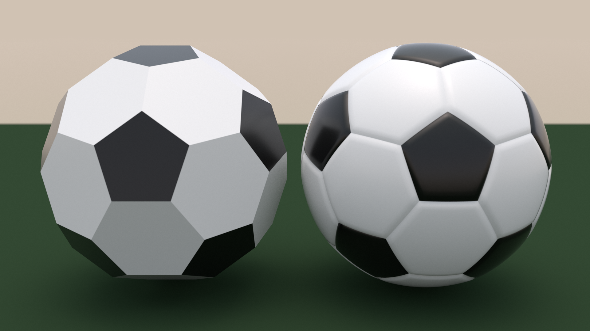
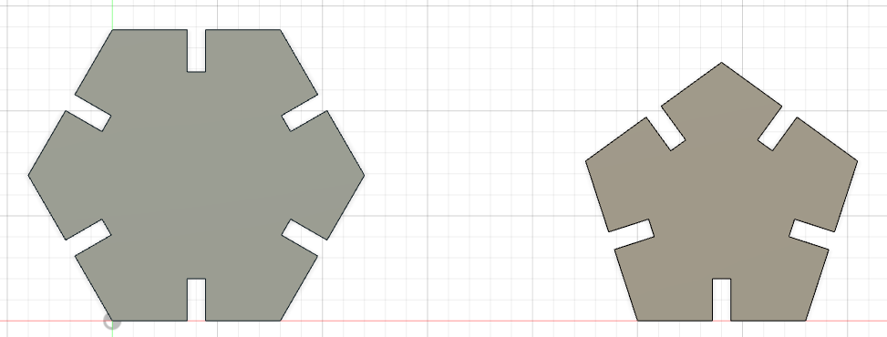
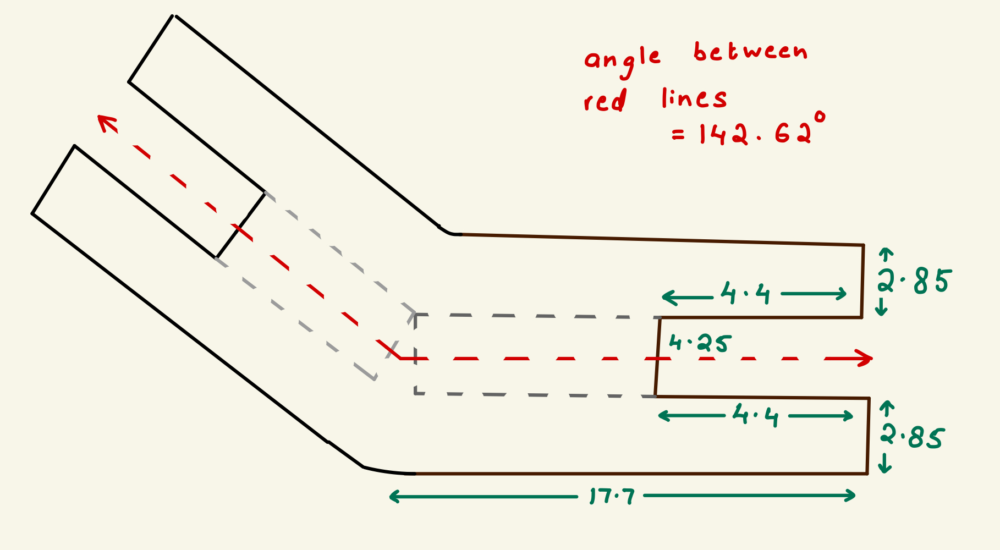

# press-fit construction
# ---------------------------------
the problem: my bedroom has an incredibly harsh ceiling lamp that i never use and a nice warm standing floor lamp in one corner. while the lighting in my room is quite pleasant when i'm lying in bed reading or thinking, it does feel a tad bit dark when i'm working at my desk which is in the opposite corner from the floor lamp. i would have moved my floor lamp to be closer to my desk but the slanted ceiling above my desk prevents me from being able to do that. so the problem i have identified is the lack of adequate warm lighting above my desk.
the solution and motivation: the natural solution for darkness is light so i decided to make a press-fit lamp. i also wanted to make a press-fit construction that had at least 2-3 different kinds of parts because i wanted to explore how different 2D shapes could interact with each other to make emergent objects. i remembered having watched instagram reels made by a guy called jon-paul wheatley (@jonpaulsballs) in which he stitches weird and wonderful footballs together, with strange and aesthetic panels. hence, i decided i would make a football-inspired lamp.
the planning and process: a not-so-quick inspection of my roommate's football revealed that a standard football is made up of 20 hexagonal faces, 12 pentagonal faces, 60 corners, and 90 edges. a google search revealed that the solid is actually called a truncated icosahedron.

just to have something to start working with and to practise using fusion 360 and the laser cutter, i went ahead and designed hexagons and pentagons with sides of 40 mm. since the hexagons and pentagons have to panel together, they have to have the same side length. i also used this opportunity to practise setting parameters, and working with the mirror, trim, and extrude functions. i used a notch width of 4.4 mm and at this point was not really thinking about kerf.

i was excited to finally use the laser cutter and so as a test round, i cut out one copy each of my hexagon and pentagon.

i now needed to start thinking about a way to join my hexagons and pentagons together. i tried to use some previously cut triangles lying in the lab to see how my panels could join together. and this got me thinking about the angle at which my hexagons and pentagons would have to meet to be able to come together as a football. i brought out a protractor and measured the angle between the notches of the triangle and it was 120 degrees, which seemed too little i.e. the faces were coming in too quickly. then, i did some research and found out that the dihedral angle of a truncated icosahedron is 142.62 degrees. this means that each of the faces meet at an angle of 142.62 degrees. (i later found out that this angle was only for the hexagon-pentagon join, while the hexagon-hexagon join had an angle of 138.19 degrees but more on that later).

i realized that the best way to join my panels would be to design some kind of joiner for my hexagons and pentagons. using my ipad, i sketched a preliminary figure of what a minimalistic joiner could look like. at this point, i realized that it was also important for the joiner to create some space between the panels of the football lamp to allow the light to come through. so in designing the joiner, i had a couple facts to work with: the notches on the faces were 4.4 mm wide, and the angle between the faces would have to be 142.62 degrees. it took a couple rounds of trial and error to fix the dimensions of the joiner so that it would allow for the ideal amount of space between two adjacent faces and also to figure out how tightly i wanted the notches to fit. if the notches were too loose, the faces would fall apart but if they were too tight, it would be far too difficult to slot everything in together.

here are versions 1 and 2 of my joiners.
now that i was happy with the way my hexagons, pentagons, and joiners were looking, it was finally time to start putting the football together. this took far longer than i expected it would.


the football looked far better than i expected! my next step will be to re-print it using a more sturdy material like wood and this time cut a round hole in one of the hexagonal panels to drop a light bulb or a string of fairy lights in it. and then my football lamp will be ready.